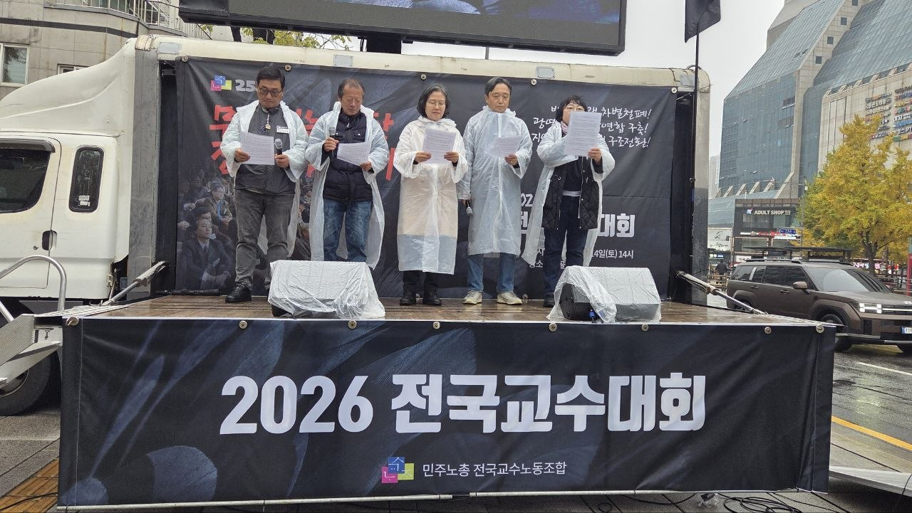
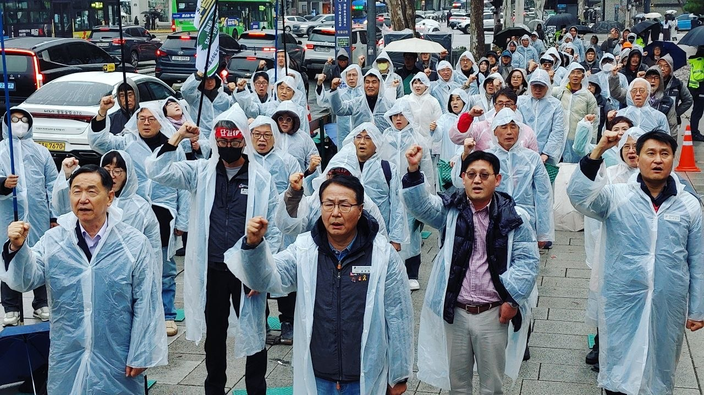
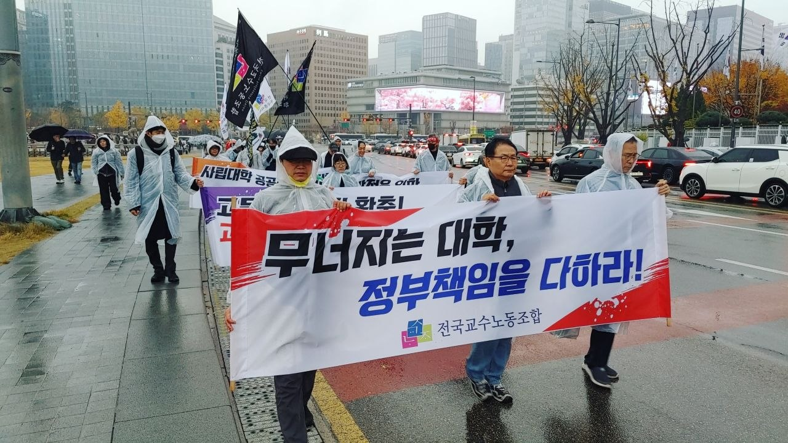
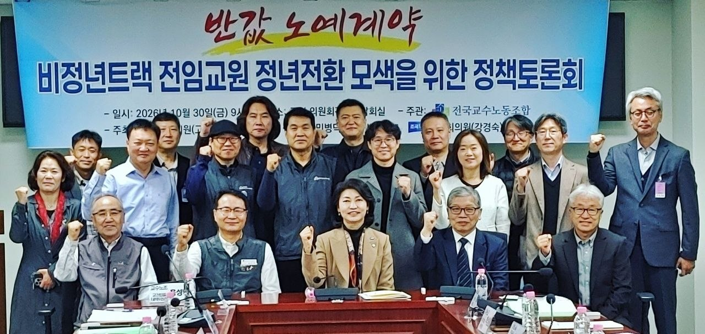
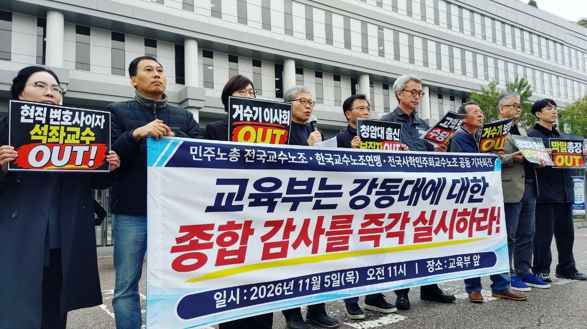
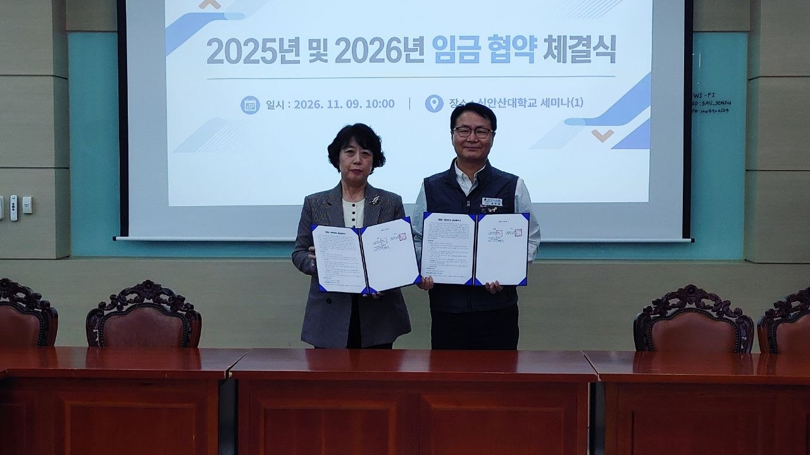
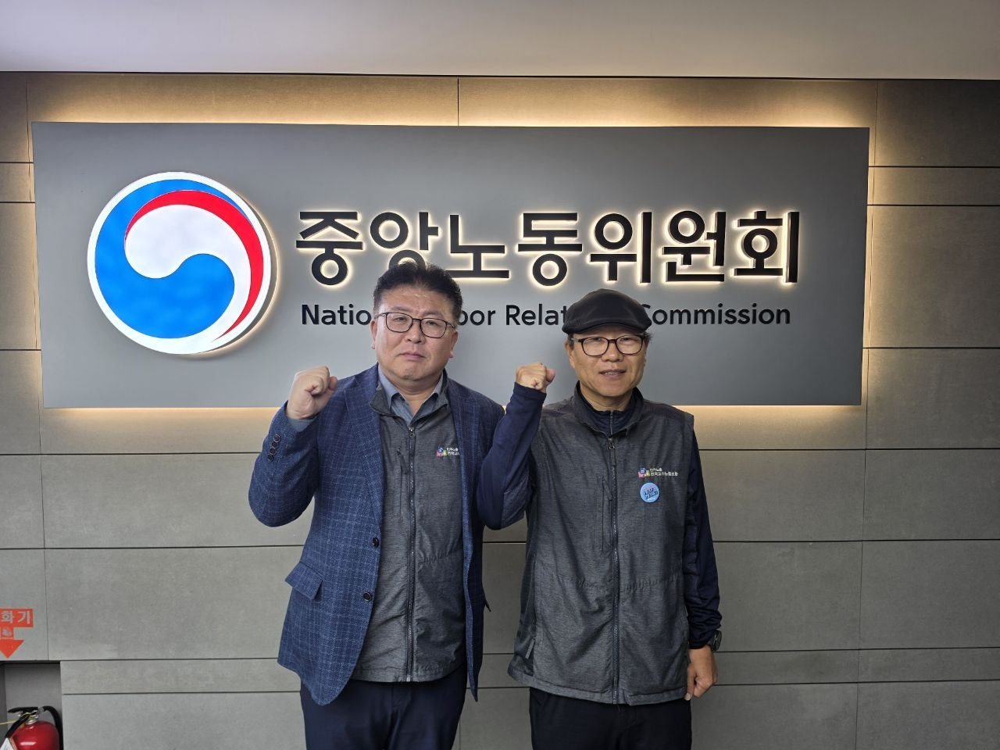

|
소식지 26-13
전국교수노동조합 뉴스레터
|
이번 호 한눈에
• 11월 14일(토) 탑골공원, 창립 25주년 2026 전국교수대회 개최
• 10월 30일 국회 토론회, ‘정부책임형 정년트랙 전환’ 촉구
• 강동대 부당 인사·채용비리 규탄 공동 기자회견(10/21, 11/5)
• 대법원, 비정년계열 교수 총장 선거권 배제는 위법(조선대) 확정
• 신안산대·한국폴리텍대 임금협약 타결 등 지회 교섭 소식
• 11월 19일(목)~25일(수), 민주노총 직선 5기 임원선거
|
|
빗속에서도 울려 퍼진 외침, “무너지는 대학, 정부가 책임져라!”
창립 25주년 맞은 교수노조, 11월 14일 탑골공원서 ‘2026 전국교수대회’ 성황리 개최
궂은 비가 내리는 날씨 속에서도 전국에서 모인 교수노동자들의 투쟁 열기는 뜨거웠다.
전국교수노동조합은 지난 11월 14일(토) 서울 탑골공원 앞에서 ‘2026 전국교수대회’를 개최하고, 빗속 행진과 대정부 요구서 전달까지 힘찬 일정을 마무리했다. 올해로 창립 25주년을 맞은 교수노조는 ‘무너지는 대학, 정부 책임을 다하라!’를 슬로건으로 내걸고 고등교육 공공성 회복을 위한 결의를 다졌다.

■ 25년의 발자취와 빗속을 가른 뜨거운 현장
본 대회에 앞서 열린 창립 25주년 기념식은 송주명 위원장의 기념사와 김상곤 제3대 위원장의 축사로 진행됐다. 이어 지난 사반세기 동안 교수노조의 창립과 발전에 헌신한 김제남 활동가, 최갑수 상임준비위원장, 황상익 초대·2기 위원장, 김상곤 제3대 위원장, 원상철 단체교섭대책위원장, 박귀현 교권실장, 유권석 남서울대 지회장 등 7명을 공로패 수상자로 선정해 감사의 마음을 전했다. 당일 시상식에는 김상곤 제3대 위원장과 원상철 단체교섭대책위원장이 참석해 수상했다.
이어 본 대회에서 송주명 위원장은 “교육의 질은 교수의 삶과 분리될 수 없다”며, 재임용 불안과 저임금에 시달리는 비정년트랙 교수의 현실을 ‘착취’로 규정하고 차별 철폐와 정년트랙 전환을 촉구했다. 아울러 소수 거점국립대 중심의 지원을 넘어 지역대학이 함께 살 수 있는 대책을 요구했다.
빗줄기 속에서도 박철웅 사립대 부위원장, 박정원 비정년트랙차별철폐위원장의 힘찬 투쟁사와 조용상 용인예술과학대지회장의 문화공연이 이어졌으며, 민주노총 전호일 부위원장, 민교협 하상복 상임공동의장, 국교조 정기룡 사무총장, 한국비정규교수노조 임헌석 사무처장의 연대사가 힘을 보탰다.

■ 우중 행진과 대정부 요구서 전달
지부장단의 결의문 낭독 후, 참가자들은 비를 맞으며 탑골공원에서 청와대 방향으로 가두행진을 벌였다. 청와대 앞에서 열린 마무리 집회에서는 전용숙 여성부위원장의 투쟁발언과 정세은 국공립대 부위원장의 대정부 요구서 낭독이 이어졌다. 이어 고등교육 정상화를 촉구하는 대정부 요구서를 청와대에 전달하며 대회는 성공적으로 마무리되었다.

2026 전국교수대회 4대 핵심 요구▸ 비정년트랙 차별철폐 및 정년트랙 완전 전환
전수조사 및 입법·재정지원 ▸ 광역 지역대학연합 구축
지역대학·전문대·연구기관의 공동 발전 기반 마련 ▸ 사립대학 공공적 구조전환 및 권리 보장
부실 사학 책임 추궁 및 학습권·고용 보장 ▸ 고등교육 국가 책임 강화
고등교육재정교부금법 제정 및 무상화 확대 |
|
“반값 노예계약 비정년트랙 차별, 정부가 끝내야”
교수노조, 30일 국회 토론회 개최… ‘정부책임형 정년트랙 전환’ 촉구
전국교수노동조합은 10월 30일 오전 9시 국회의원회관에서 ‘반값 노예계약 비정년트랙 전임교원 정년전환 모색 정책토론회’를 열고, 개별 대학의 선의에만 기대는 한계를 넘어선 ‘정부책임형 정년트랙 전환’의 입법·재정 방안을 촉구했다.

■ 20개 대학 중 11곳, 보수 60% 미만… 중첩된 차별 확인
박정원 비정년트랙차별철폐위원장이 발표한 자체 실태조사 결과, 분석 대상 20개 대학 중 11개교(55%)의 비정년트랙 보수가 정년트랙의 60% 미만이었다. 16개교는 1~2년 단기 계약에 묶여 있었고, 18개교는 계약서에 전환 가능성조차 명시하지 않았다. 같은 전임교원으로서 교육·연구를 감당하면서도 저임금과 고용불안, 학내 의사결정 배제 등 차별이 중첩된 현실이 드러난 것이다.
■ ‘무늬만 전환’ 넘어 실질적 권리 보장과 정부 책임 요구
송주명 위원장은 “대학에 따라 차별에서 벗어날 기회까지 달라져선 안 된다”며, 정부가 전국 실태조사를 바탕으로 전환 원칙과 입법·재정 지원책을 마련해야 한다고 역설했다.
한신대(16명 전환)·계원예대(15명 전환) 사례를 분석한 김선일 정책실장은 직함 변경을 넘어선 보수·승진·연구년 등 실질적 권리 보장을 강조했다. 투쟁 당사자인 정예수 한신대지회장 역시 이사회 의결 뒤에도 삭발·단식을 거쳐야 했던 현실을 전하며, “투쟁을 감당하는 대학만 전환되는 구조가 아니라 법과 재정으로 전환 의무와 이행을 강제해야 한다”고 호소했다.
이 밖에도 토론자들은 ▲학과 평가·추천제 등 불합리한 전환 문턱 철폐(천효범 목원대지회장) ▲현행 법령에 따른 교육부의 사실조사 및 지도·감독권 행사(박성원 대구대지회 정책국장) ▲대학알리미 내 비정년트랙 현황 및 확보율 분리 공시(임은희 대학교육연구소 연구원) 등을 한목소리로 요구했다.
■ 11월 14일 전국교수대회 투쟁으로 이어져
비정년트랙 차별 철폐는 대학의 공공성과 교육·연구 역량을 지키는 우리 모두의 과제다. 교수노조는 토론회 결과를 바탕으로 국회와 교육부에 후속 조치를 요구하는 한편, 11월 14일 전국교수대회에서 조합원들의 단결된 힘으로 ‘정부책임형 정년트랙 전환’을 요구하는 투쟁으로 이어졌다.
|
강동대학교 부당 인사·채용비리 규탄
교수노동단체, 연이은 공동 기자회견으로 진상 규명 촉구
전국교수노동조합, 전국사학민주화교수노동조합, 한국교수노동조합연맹 등 전국 교수노동단체들이 강동대학교의 부당한 교원인사 행정과 대학 운영 실태를 바로잡기 위해 연이어 강력한 공동 투쟁에 나섰다.
1차 행동 (10월 21일)
“재임용 심사 중대한 하자 인정하고, 이용희 지회장 즉각 복직시켜라”
교수노동단체들은 지난 10월 21일 강동대학교 공산관 앞에서 합동 기자회견을 개최했다. 서울행정법원이 10월 1일 이용희 교수(교수노조 강동대지회장)의 재임용 거부 취소 소송에서 연구실적 배제 및 평가 누락 등 재임용 심사의 ‘중대한 하자’를 인정하며 교원소청심사위원회의 기각 결정을 취소했음에도, 대학 측이 항소를 이어가며 법적 다툼을 계속하는 점을 강력히 규탄하기 위함이었다.
특히 단체들은 10월 15일 유죄가 최종 확정된 강동대 ‘교수채용비리’ 사건의 피고인들이, 정작 그 비리를 고발한 이 교수의 재임용 심사에 교원인사위원장 및 인사위원으로 관여한 사실을 폭로했다. 채용비리 관련자의 엄벌을 탄원했던 대학이 고발자의 승소 판결 이후에는 책임을 외면하고 법적 다툼에 매달리는 모순을 지적하며, 이를 ‘조직적 보복성 인사조치’로 규정하고 총장과 대학 집행부의 책임을 물었다.
2차 행동 (11월 5일)
“국정감사 지적 실현하라… 강동대학교 종합감사 즉각 실시하라”
이어 교수노동단체들과 연대 노동단체들은 지난 11월 5일 교육부 앞에서 공동 기자회견을 열고 투쟁의 수위를 높였다. 지난 10월 23일 국회 교육위원회 국정감사에서 강동대학교의 교수 채용·인사 문제, 채용비리 후속조치 미이행, 재산관리 문제 등이 공식 제기되고 교육부 장관이 사실확인 의사를 밝힌 만큼, 이제는 교육부가 직접 현장 감사에 착수해야 한다는 취지였다.
이들은 개별 민원 회신 방식에 머물지 말고, 강동대학교와 학교법인 숭희학원에 대한 전면적인 현장 종합감사를 즉각 실시할 것을 촉구했다.

교수노동단체의 거듭된 요구 사항두 차례의 기자회견을 통해 교수노동단체들은 강동대학교와 교육부에 다음과 같은 핵심 요구를 강력히 관철해 나갈 것을 천명했다. ◯ 판결 수용 및 즉각 복직 강동대는 행정법원 판결을 존중하여 재임용 심사의 ‘중대한 하자’를 인정하고 항소를 중단해 이용희 지회장을 즉각 복직시킬 것 ◯ 교원인사 전반 감사 교육부는 과거부터 현재까지 재임용·특별채용·직급 부여 등 교원인사위원회 운영 전반의 적정성을 철저히 감사할 것 ◯ 채용비리 후속조치 및 보복 의혹 규명 채용비리 유죄 확정에 따른 임용취소 및 징계 절차를 즉각 이행하고, 유죄판결자의 재임용 심사 관여 경위와 조직적 보복 인사 의혹을 낱낱이 밝힐 것 ◯ 회계 및 수당 적정성 조사 총장 및 핵심 보직자의 보직수당 책정 근거, 이사회 의결 전 선집행 여부와 교비회계 사용 실태를 원 자료로 대조·감사할 것 |
교수노동단체는 “사립대학의 자율성이 인사와 회계의 불투명성을 감추는 방패가 될 수 없다”며, 이용희 지회장의 온전한 권리 회복과 교육부의 강동대 종합감사 실시가 이루어질 때까지 끝까지 공동 대응을 이어갈 방침이다.
|
“비정년계열 교수 총장 선거권 원천 배제는 위법”… 대법원 최종 확정
조선대 학교법인 상고 기각, 위자료 지급 판결 확정
“대학 자율성도 헌법상 평등 원칙 넘어설 수 없어… 비정년트랙 차별철폐 투쟁의 정당성 확인”
대학 현장에서 관행처럼 자행되어 온 비정년트랙 교수에 대한 참정권 박탈이 헌법상 평등의 원칙에 위배되는 불법행위라는 대법원의 최종 판단이 나왔다.
대법원 2부(주심 권영준 대법관)는 지난 10월 30일, 강의전담교원과 교육중점교원 등 비정년계열 전임교수 33명이 학교법인 조선대학교를 상대로 제기한 ‘총장임용후보자선출규정무효확인’ 소송에서 학교법인의 상고를 모두 기각하고, 정신적 손해에 대한 위자료 지급 의무를 인정한 원심을 확정했다.
■ 전체 전임교원 40% 배제한 불공정 선거… “본질적으로 동일한 전임교원”
사건은 2022년 조선대학교 제12대 총장 선출 과정에서 불거졌다. 당시 학교법인은 정년계열 교원(48%)을 비롯해 직원(23.7%), 학생(21.3%), 동창회(5%), 일부 비정년 전임교원(2%)에게는 투표권을 부여하면서도, 전체 전임교원의 약 40%(41명 중 38명)를 차지하는 강의전담·교육중점교원에게는 선거권을 일절 주지 않았다. 국가인권위원회의 규정 정비 권고와 교수노동조합의 부당성 지적 성명에도 학교법인은 선거를 강행했다.
이에 대해 대법원은 비정년계열 교수들 역시 고등교육법상 전임교원으로서 교육과 연구를 수행하는 대학의 핵심 구성원이며, 승진과 재임용 심사에서도 정년계열과 동일한 기준으로 연구업적을 평가받는 등 본질적으로 동일한 비교집단에 속한다고 판단했다.
■ “신분 불안정한 비정년 교수가 총장 선출에 더욱 절실한 이해관계 가져”
특히 대법원은 비정년계열 교수의 고용 불안정성에 주목했다. 재판부는 “신분이 상대적으로 취약한 교수들이 총장의 대학 운영 방향과 재임용 심사 등에 따라 더 큰 영향을 받을 수 있어 총장 선출에 더욱 절실하고 직접적인 이해관계를 가진다”고 지적했다.
또한 사립대학에 총장 선출 방식에 관한 자율성이 인정되더라도, 그 자율성이 헌법상 평등 원칙을 침해하는 차별의 근거가 될 수는 없다고 못 박았다. 선거 참여 비율을 합리적으로 조정할 수는 있어도 참여 기회 자체를 원천 봉쇄한 것은 대학자치의 헌법적 정당성을 스스로 훼손하는 위법 행위라는 취지다.
■ 전국 대학 비정년트랙 차별철폐 투쟁에 기폭제 될 듯
이번 판결은 사립대학의 ‘자율성’이라는 명분 뒤에 숨어 비정년트랙 교수를 2등 시민 취급해 온 대학 당국의 행태에 사법부가 명확한 제동을 걸었다는 점에서 큰 의의가 있다.
교수노조가 2026 전국교수대회를 통해 천명한 ‘비정년트랙 차별철폐 및 정년트랙 완전 전환’ 요구의 정당성이 다시 한번 입증된 만큼, 이번 대법원 판결은 전국 각 대학의 불평등한 총장 선출 규정 개정과 학내 민주주의 회복을 끌어내는 중요한 기폭제가 될 전망이다.
|
현장의 힘으로 일궈낸 교섭 성과… 전국 지회 교섭·투쟁 동향
신안산대·한국폴리텍대 임금협약 타결, 대구대지회 12월 3일까지 천막농성 돌입
전국의 교수노조 지회들이 대학 당국을 상대로 교권 수호와 처우 개선을 위한 치열한 단체교섭과 투쟁을 이어가고 있다. 최근 신안산대지회와 한국폴리텍대지회가 값진 임금협약 합의를 이끌어냈으며, 대구대지회는 학내 차별 시정과 권고 이행을 촉구하며 천막농성에 돌입했다. 이 밖에도 계원예대·한신대·한라대 등 전국 각지에서 교섭의 고삐를 늦추지 않고 있다.
■ 임금협약 타결 및 조인식
|
신안산대지회 · 2025·2026 임금협약 조인식
11월 9일 오전 10시 신안산대에서 송주명 위원장이 참석한 가운데 조인식을 가졌다. 양측은 △호봉제 2025·2026년 각 3% 인상 △연봉제 2025·2026년 임금인상률이 10% 미만일 경우, 10%와의 차액만큼 소급 지급하는 데 합의했다.
|

|
한국폴리텍대학지회 · 2026 임금교섭 합의
11월 4일 열린 3차 조정회의에서 극적인 노사 합의에 이르렀다. 교원 인건비 분리 편성·집행을 위해 노사공동 TFT를 운영하고, 합의안을 2028년 회계연도 예산안에 반영하기로 했다. 또한 총인건비 인상률 3.5% 한도 내에서 ① 월봉 3.5% 인상 ② 정근수당 지급률 100% ③ 2026년 한시적 명절수당 10% 한도 내 인상 ④ 연구활동비 일시금 정액 지급(재원 범위 초과 시 4·3·2·1호 순 감액)에 합의했다.
|

■ 학내 차별 시정 및 투쟁 동향
|
대구대지회 · 12월 3일까지 천막농성 진행
비정년트랙 전임교원의 교수회 가입과 총장 선출권 보장을 권고한 국가인권위원회의 결정을 바탕으로, 대학 당국의 실질적인 학칙 개정과 차별 시정을 촉구하며 오는 12월 3일까지 천막농성을 이어간다.
|
■ 노동위원회 조정 및 본교섭·예비교섭 현황
| 계원예대지회 |
2026년 임금 조정신청에 따라 지회장과 부지회장 2인 등이 참석해 11월 4일 1차 조정회의, 11월 12일 2차 조정회의를 연이어 진행했다. |
| 한신대지회 |
11월 10일 오후 3시, 조직국장이 참여한 가운데 11차 단체교섭을 진행했다. |
| ICT폴리텍대학지회 |
11월 2일 오후 3시, 장지연 사무총장, 송홍종 지부장, 조용상 경인지부 사무국장이 참여한 가운데 10차 교섭을 가졌다. |
| 부산경상대지회 |
11월 4일 오후 5시, 사무처장이 참여해 2026년 단협 3차 교섭을 열었으며, 오는 11월 25일 오후 6시 차기 교섭을 이어간다. |
| 한라대지회 |
11월 3일 오후 4시, 사무처장·선전홍보실장·한라대지회장 등이 참석해 3차 단체교섭을 진행했다. 차기 교섭은 11월 24일 오후 4시에 열린다. |
| 서울불교대학원대지회 |
11월 2일 오후 2시, 2026년 단협 3차 교섭을 진행했다. |
| 경희사이버대지회 |
10월 30일 오후 2시, 2025년 단협 1차 교섭을 열고 단협안 상호 검토 후 추후 본교섭을 진행하기로 했다. |
| 청암대지회 |
11월 4일 오후 2시 예비교섭을 진행했다. |
| 강릉영동대지회 |
11월 6일 오후 2시, 사무처장과 조직국장이 참석해 예비교섭을 마쳤으며, 오는 11월 27일 오후 2시에 본교섭을 시작한다. |
|
광장의 투쟁을 투표의 힘으로!
교수노조 간부·조합원 ‘전국노동자대회’ 결합 이어, 19일부터 민주노총 직선 5기 임원선거 돌입
■ 교수노조 간부·조합원도 함께한 ‘2026 전국노동자대회’
전태일 열사 정신을 계승하고 모든 노동자의 노동기본권 쟁취를 촉구하는 ‘2026 전국노동자대회’가 전국에서 모인 조합원들의 뜨거운 함성 속에 개최됐다. 이날 대회에는 교수노조 간부와 조합원들도 결합해 깃발을 들고 광장의 연대에 힘을 보탰다.
민주노총은 △원청교섭 쟁취 및 개정 노조법의 온전한 시행 △비정규직·특수고용 차별 철폐 △공공성 강화 및 사회대개혁 실현을 핵심 요구로 내걸고 대정부 투쟁을 결의했다. 교수노조 참가자들 역시 전체 노동자들과 발맞춰 행진하며 고등교육 공공성 회복과 비정년트랙 차별철폐의 목소리를 높였다.
■ 민주노총 향후 3년 이끌 직선 5기 임원선거, 19일 투표 개시
광장에서 모아낸 투쟁의 열기는 이제 새로운 지도부를 세우는 직접선거로 이어진다. 향후 3년간 민주노총을 이끌어 갈 ‘2026년 민주노총 직선 5기 및 16개 지역본부 임원선거’가 오는 11월 19일(목)부터 25일(수)까지 7일간 실시된다.
고등교육 공공성 강화와 대학 현장의 구조적 차별을 해소하기 위해서는 민주노총 전체의 연대와 투쟁력이 무엇보다 중요하다. 조합원의 손으로 직접 지도부를 선출하는 소중한 권리 행사에 교수노조 조합원 동지들의 적극적인 투표 참여를 당부드린다.
|
민주노총 직선 5기 임원선거 투표 안내
투표 기간 2026년 11월 19일(목) ~ 11월 25일(수)
투표 방법 현장투표 및 전자투표 (문자·이메일로 발송되는 선거 안내 링크 접속 후 참여)
|
|
|
전국교수노동조합 뉴스레터 · 소식지 26-13
|
|